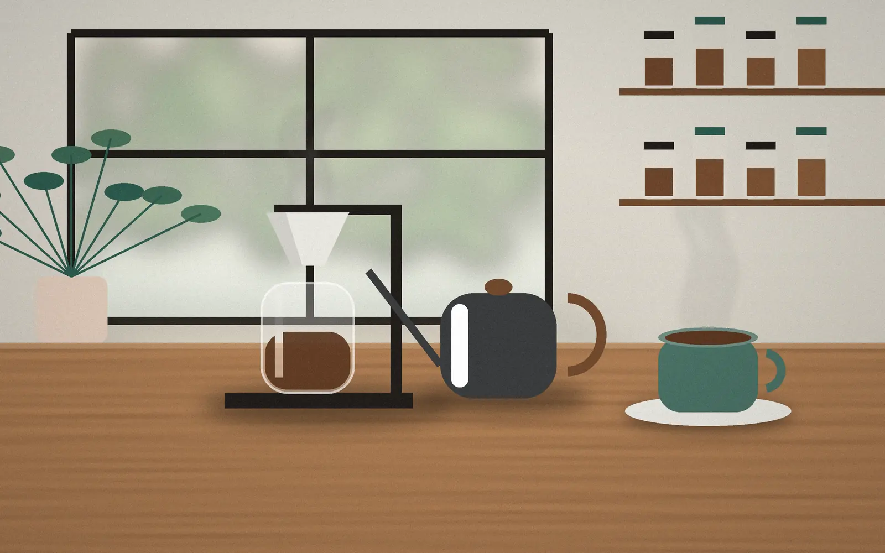
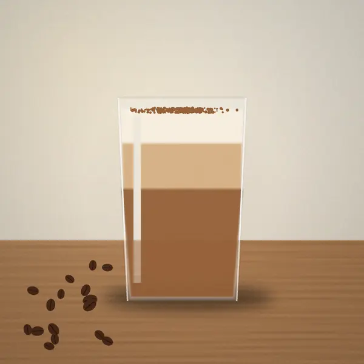
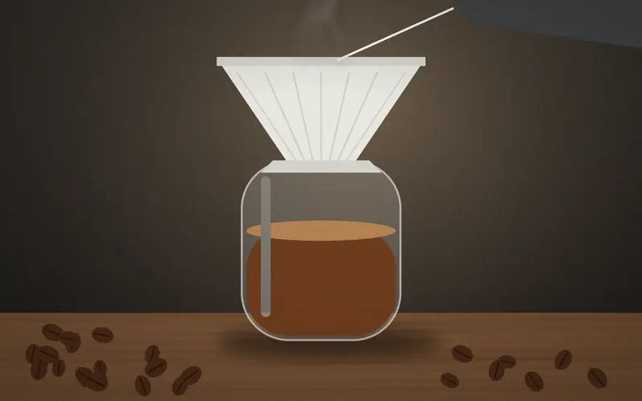
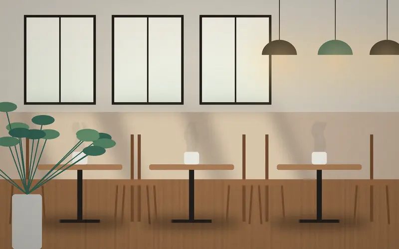
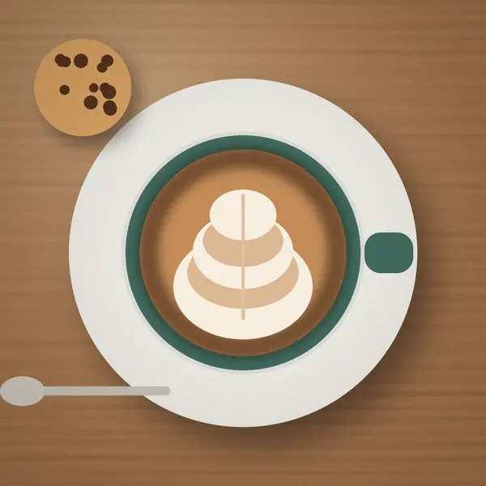
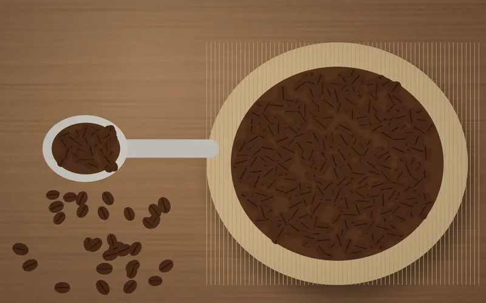
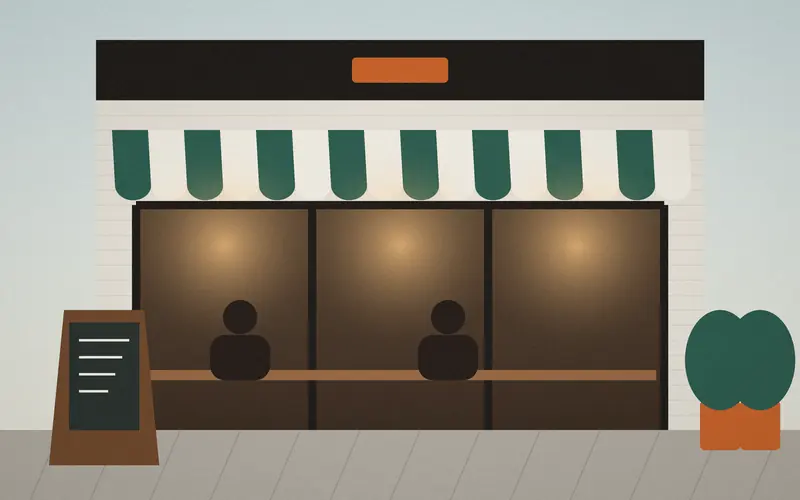

和栗のモンブラン
和栗のペーストを細く絞り、サクッと焼いたタルトにのせました。甘さは控えめ。深煎りのブレンドとよく合います。
¥720税込
ブレンドとセットで ¥1,150（通常より90円お得）
営業時間 7:30〜
席を予約
SEASONAL ・ 10.1 — 11.30
熊本県産の和栗と、京都のほうじ茶。11月末までの、季節のふたつです。
和栗のペーストを細く絞り、サクッと焼いたタルトにのせました。甘さは控えめ。深煎りのブレンドとよく合います。
¥720税込
ブレンドとセットで ¥1,150（通常より90円お得）

京都のほうじ茶を濃いめに煮出して、牛乳とあわせました。ホット・アイスどちらも可。豆乳への変更は＋50円です。
¥620税込
カフェインが少なめなので、夕方にも

CONCEPT
店主がひとりで焙煎から抽出までしています。豆は焼いてから2週間以内のものだけ。一杯ずつハンドドリップで淹れるので、混んでいる時間は少しお待ちいただくことがあります。
TAKEOUT
受け取る時間を選んで注文すると、並ばずにお渡しできます。お支払いは受け取りのときに。
デモこのフォームは見本です。注文はお店に送られません。
RESERVATION
10:30以降の時間なら、前日までネットで予約できます。当日や7名以上は、お電話でお問い合わせください。
過去3か月の来店数をもとにした目安です（サンプルの数値）。
INSIDE
新作や臨時休業はInstagramでもお知らせしています（公開時にアカウントを設定）




ACCESS & HOURS
| 月 | 7:30 — 18:00 | L.O. 17:30 |
|---|---|---|
| 火 | 7:30 — 18:00 | L.O. 17:30 |
| 水 | 定休日 | |
| 木 | 7:30 — 18:00 | L.O. 17:30 |
| 金 | 7:30 — 18:00 | L.O. 17:30 |
| 土 | 8:00 — 19:00 | L.O. 18:30 |
| 日・祝 | 8:00 — 19:00 | L.O. 18:30 |
FAQ
ほかにも気になることがあれば、お電話か店頭で気軽に聞いてください。
はい。カウンター6席はおひとりの方が多く、作業や読書でゆっくりされています。混んでいる時間は2時間を目安にお願いしています。
大丈夫です。ベビーカーのまま入れるテーブル席があり、子ども用の椅子と食器もご用意しています。こどもミルク（300円）もあります。
できます。Wi-Fiは全席、電源はカウンター席で使えます。土日の12〜15時は混み合うため、長時間のご利用はご遠慮いただいています。
はい、100g 780円からお買い求めいただけます。ご自宅の器具に合わせて挽きます。テイクアウトの事前注文からも豆はご注文いただけます（公開時に設定）。
店内はご遠慮いただいています。入口横のベンチ席なら、リードをつけたペットとご一緒にどうぞ。